BotWorkspace screen atlas
58 original synthetic native PNG files · 24 offline scenarios · source ab2c2f3
Native-window renders, not a real account or remote desktop. Some scrollable sections are outside the captured viewport; see captions. No private reference screenshots.
{kind=link}
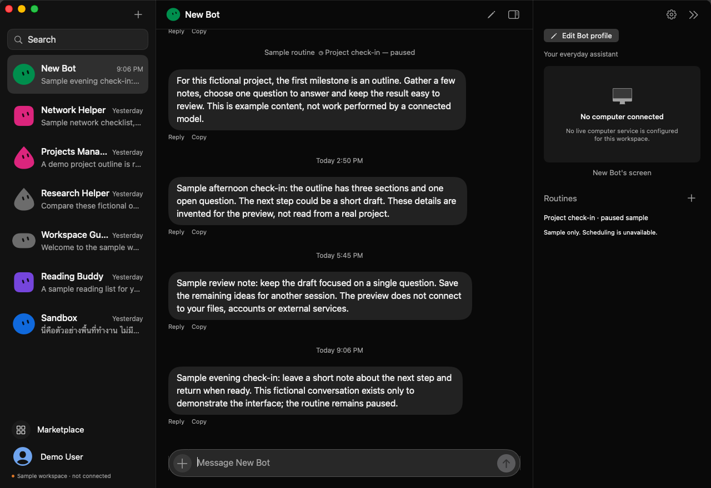
S01 · sample-chat
sample-chat--desktop-chat.pngSynthetic native fixture render; no physical interaction or live provider claim.
1280 × 880 PNG pixels{kind=link}
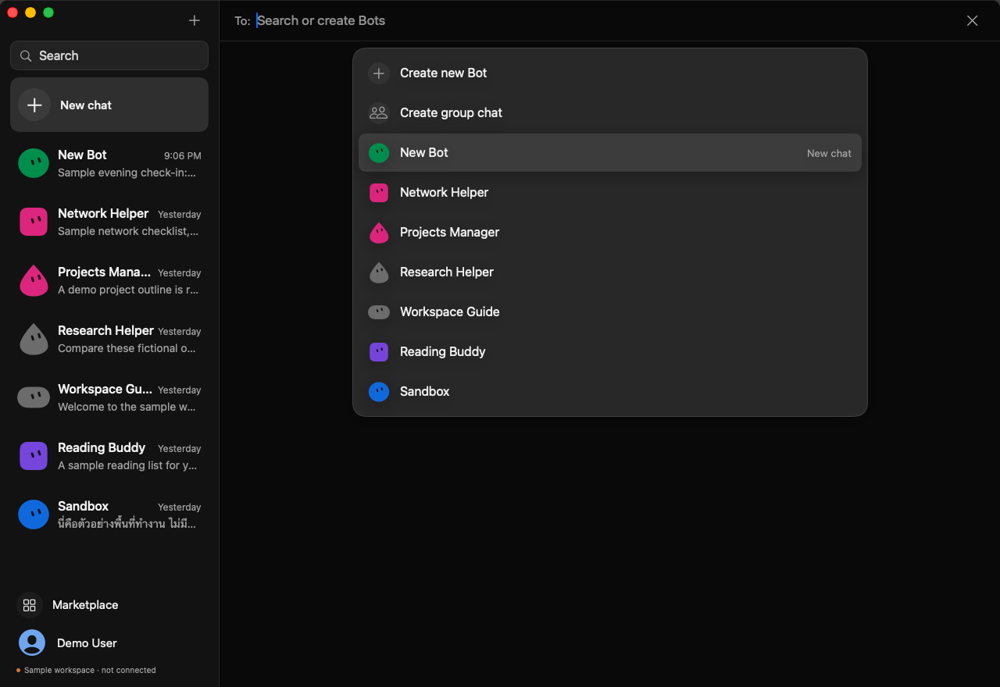
S02 · sample-picker
sample-picker--desktop-picker.pngSynthetic native fixture render; no physical interaction or live provider claim.
1280 × 880 PNG pixels{kind=link}
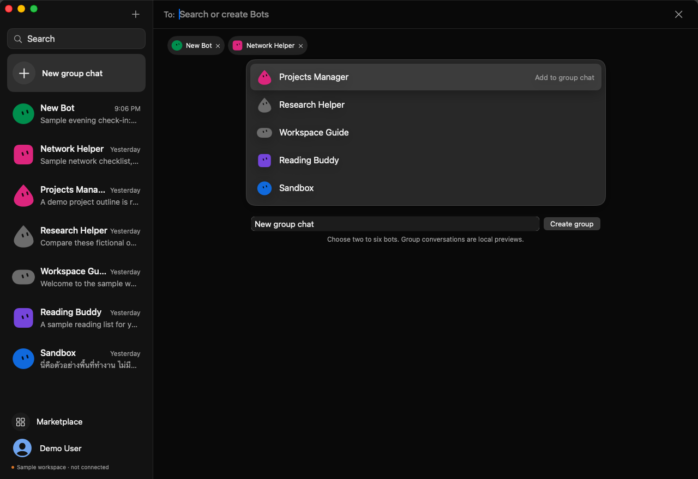
S03 · sample-group-picker
sample-group-picker--desktop-group.pngSynthetic native fixture render; no physical interaction or live provider claim.
1280 × 880 PNG pixels{kind=link}
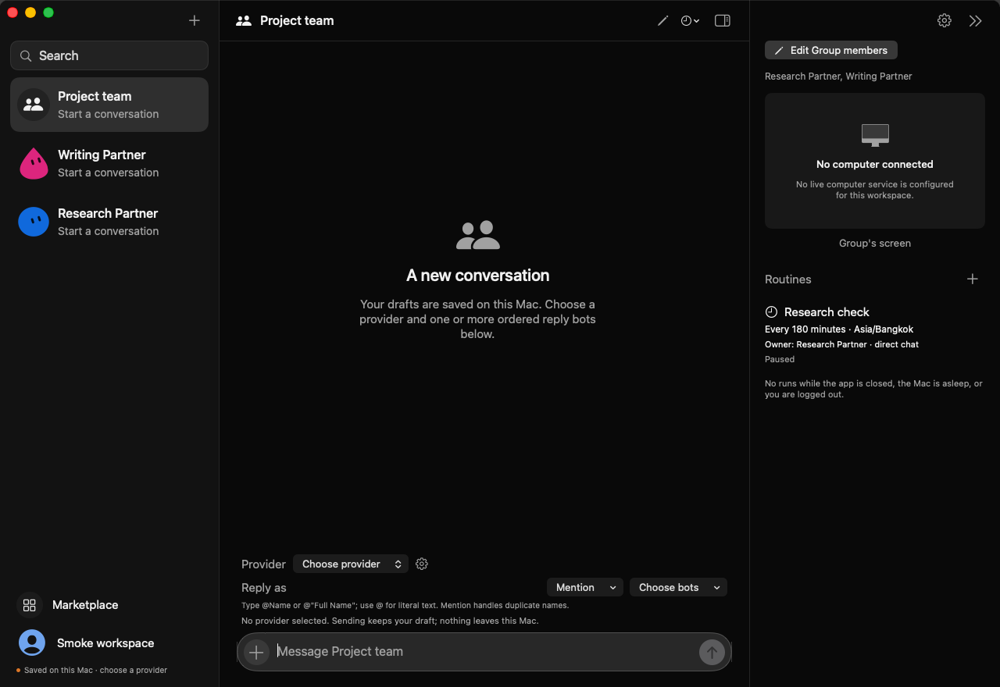
S04 · workspace
workspace--desktop-durable-workspace.pngSynthetic native fixture render; no physical interaction or live provider claim.
1280 × 880 PNG pixels{kind=link}
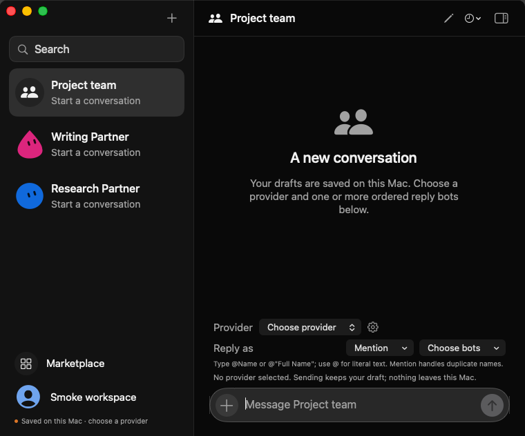
S05 · workspace-minimum
workspace-minimum--small-durable-workspace.pngSynthetic native fixture render; no physical interaction or live provider claim.
760 × 632 PNG pixels{kind=link}
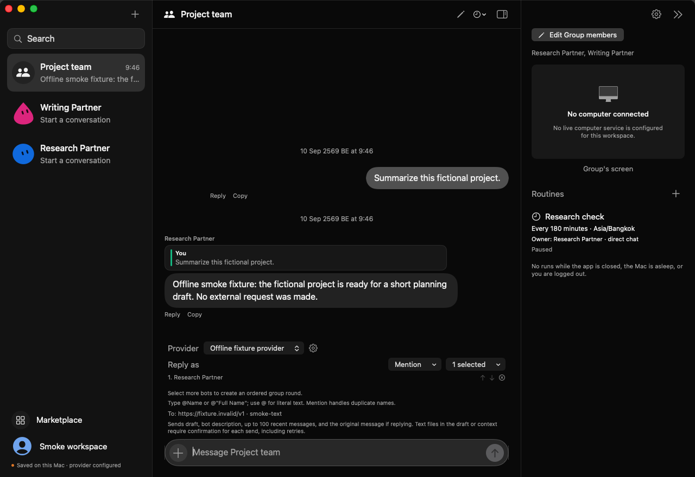
S06 · provider-chat
provider-chat--desktop-provider-chat.pngSynthetic native fixture render; no physical interaction or live provider claim.
1280 × 880 PNG pixels{kind=link}
S07 · provider-settings
provider-settings--desktop-provider-settings.pngTop-of-Settings viewport only. Connection/model/key controls continue below the fold; this is not full provider-field visual evidence.
580 × 772 PNG pixels{kind=link}
S08 · router-settings
router-settings--desktop-router-model-settings.pngTop-of-Settings viewport only. Router fixture selection is visible; discovered model controls below the fold are not shown.
580 × 772 PNG pixels{kind=link}
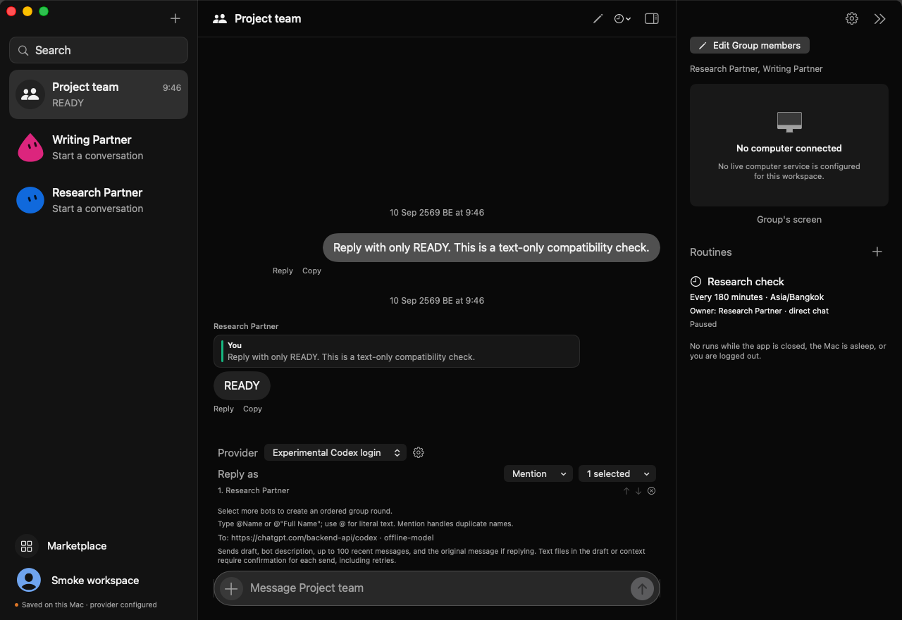
S09 · codex-chat
codex-chat--desktop-codex-chat.pngSynthetic native fixture render; no physical interaction or live provider claim.
1280 × 880 PNG pixels{kind=link}
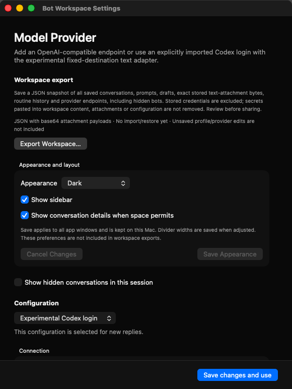
S10 · codex-settings
codex-settings--desktop-codex-settings.pngTop-of-Settings viewport only. Experimental provider selection is visible; auth/import controls below the fold are not shown.
580 × 772 PNG pixels{kind=link}
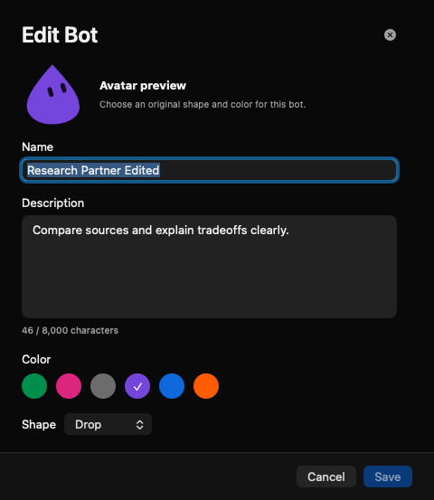
S11 · edit-bot
edit-bot--desktop-edit-bot.pngSynthetic native fixture render; no physical interaction or live provider claim.
480 × 553 PNG pixels{kind=link}
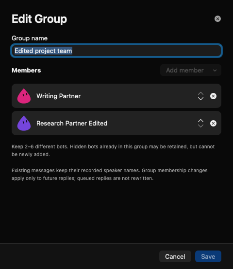
S12 · edit-group
edit-group--desktop-edit-group.pngGroup editor viewport is clipped before Cancel/Save footer; source/ASCII document those controls, this image does not prove footer visibility.
480 × 553 PNG pixels{kind=link}
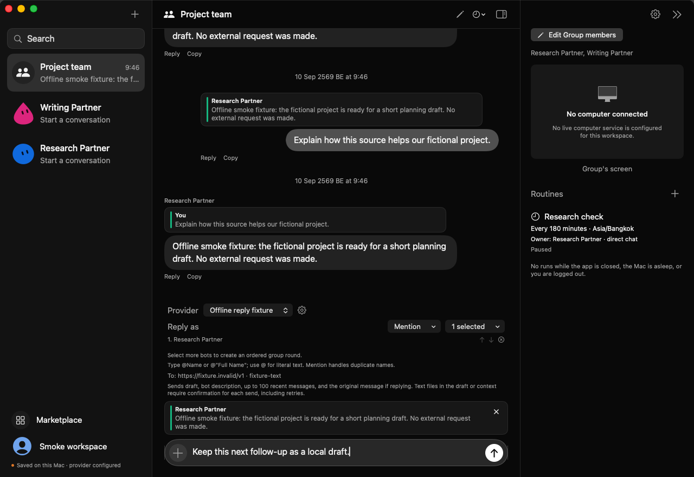
S13 · reply
reply--desktop-reply-chat.pngReply reference/composer are visible; the first transcript bubble is clipped at the top viewport.
1280 × 880 PNG pixels{kind=link}
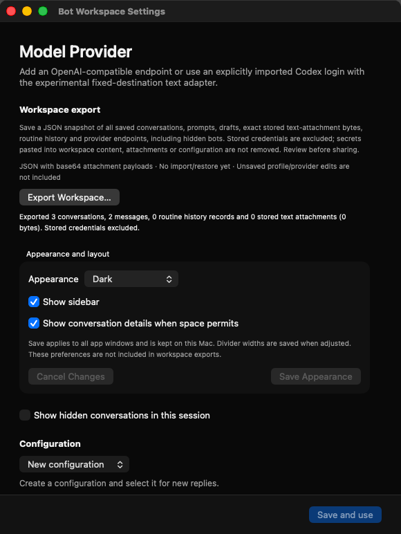
S14 · export
export--desktop-export-settings.pngSynthetic native fixture render; no physical interaction or live provider claim.
580 × 772 PNG pixels{kind=link}
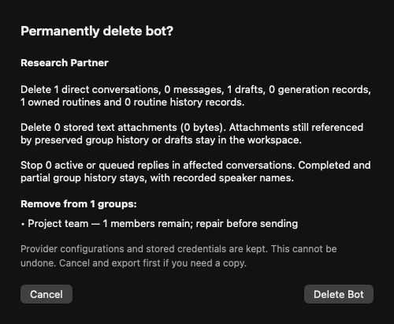
S15 · deletion
deletion--desktop-delete-confirmation.pngSynthetic native fixture render; no physical interaction or live provider claim.
500 × 411 PNG pixels{kind=link}
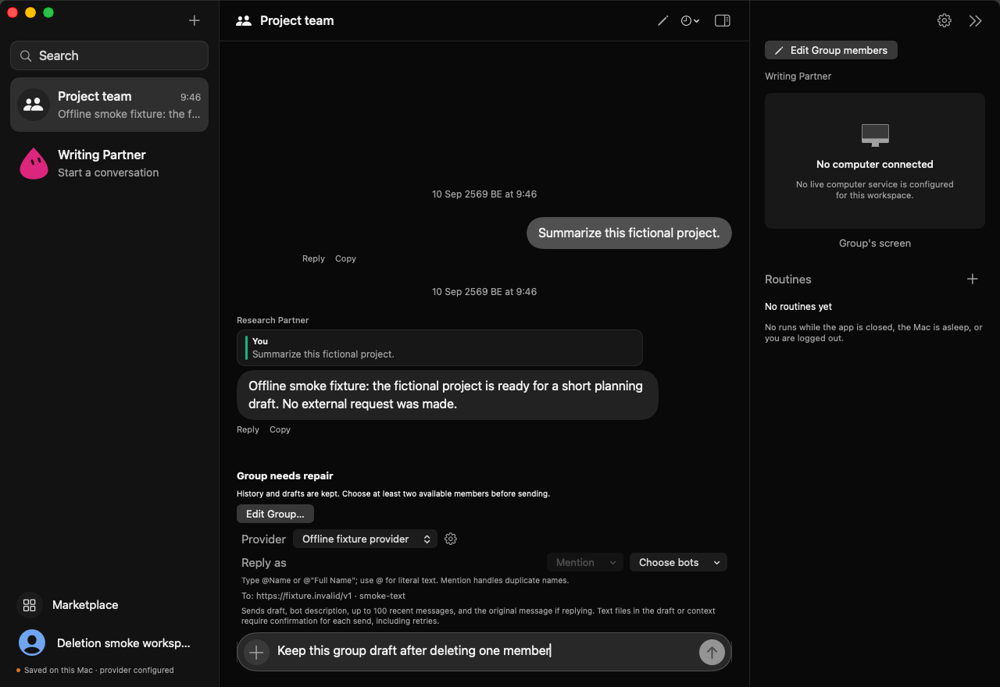
S16 · deletion
deletion--desktop-degraded-group.pngSynthetic native fixture render; no physical interaction or live provider claim.
1280 × 880 PNG pixels{kind=link}
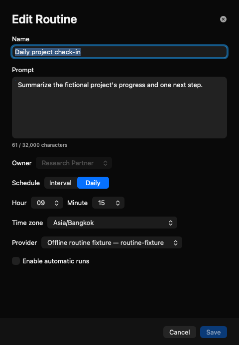
S17 · routine
routine--desktop-routine-editor.pngEditor is complete; history capture stops partway through a record and does not show the full scrollable history.
480 × 693 PNG pixels{kind=link}
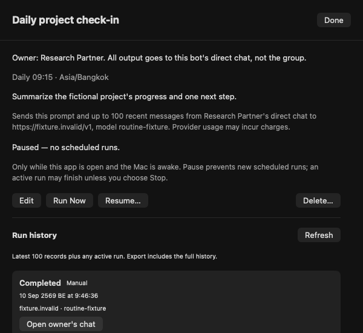
S18 · routine
routine--desktop-routine-history.pngEditor is complete; history capture stops partway through a record and does not show the full scrollable history.
600 × 550 PNG pixels{kind=link}
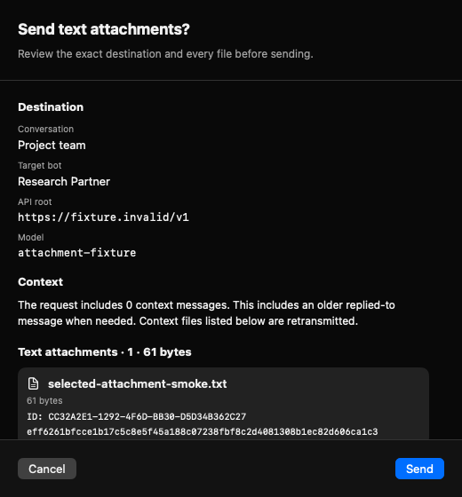
S19 · attachment
attachment--desktop-attachment-confirmation.pngConsent is visible; attachment metadata continues below the visible scroll area/fixed footer. This is injected selection, not the real OS picker.
520 × 560 PNG pixels{kind=link}
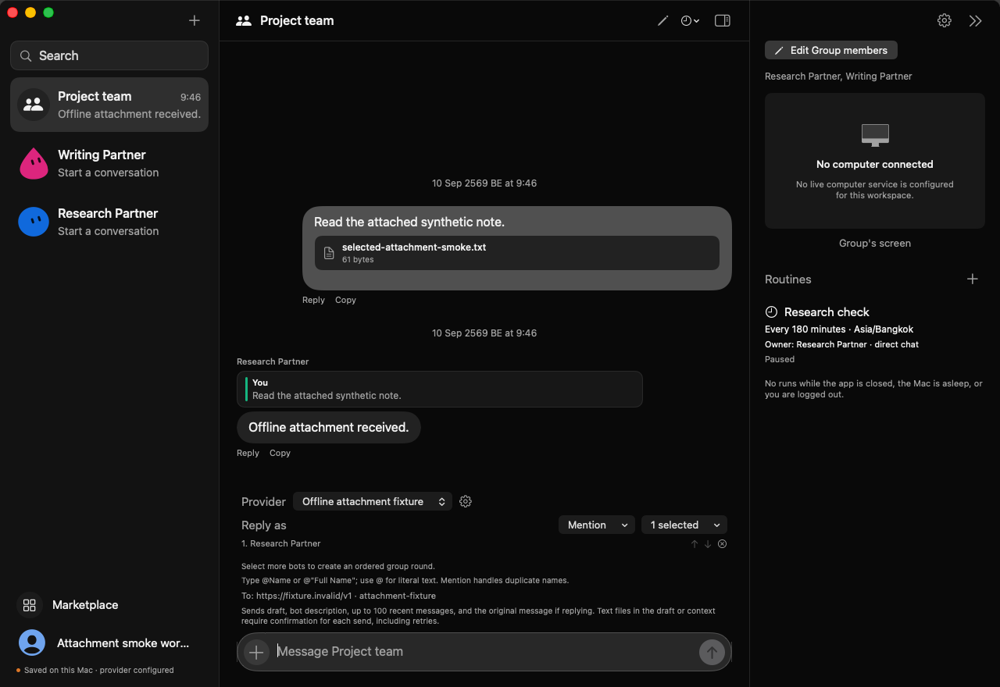
S20 · attachment
attachment--desktop-durable-workspace.pngFinal state of this named fixture scenario, NOT a first-launch baseline. Consent is visible; attachment metadata continues below the visible scroll area/fixed footer. This is injected selection, not the real OS picker.
1280 × 880 PNG pixels{kind=link}
S21 · appearance
appearance--desktop-appearance-light-workspace.pngSynthetic native fixture render; no physical interaction or live provider claim.
1280 × 880 PNG pixels
S22 · appearance
appearance--desktop-appearance-light-settings.pngSynthetic native fixture render; no physical interaction or live provider claim.
580 × 772 PNG pixels{kind=link}
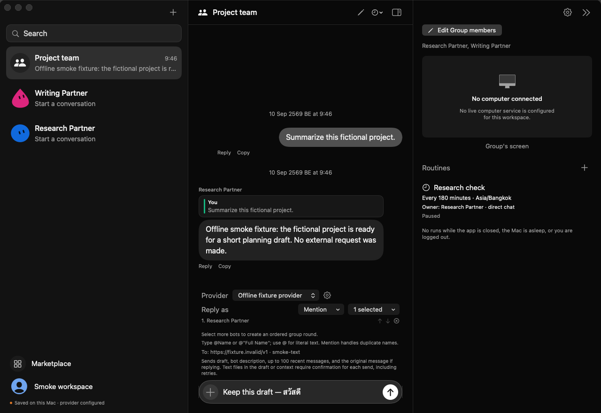
S23 · appearance
appearance--desktop-appearance-dark-workspace.pngSynthetic native fixture render; no physical interaction or live provider claim.
1280 × 880 PNG pixels{kind=link}
S24 · appearance
appearance--desktop-appearance-dark-settings.pngSynthetic native fixture render; no physical interaction or live provider claim.
580 × 772 PNG pixels
S25 · appearance
appearance--desktop-appearance-system-workspace.pngSynthetic native fixture render; no physical interaction or live provider claim. Identical PNG content to S23 (different alias/theme record).
1280 × 880 PNG pixels
S26 · appearance
appearance--desktop-appearance-system-settings.pngSynthetic native fixture render; no physical interaction or live provider claim.
580 × 772 PNG pixels{kind=link}
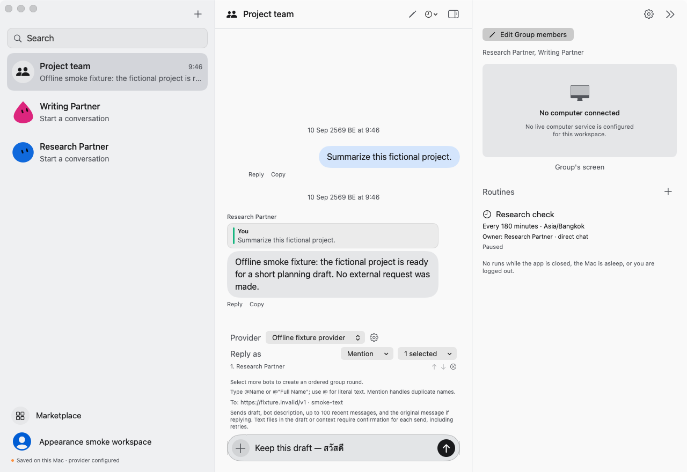
S27 · appearance
appearance--desktop-durable-workspace.pngFinal state of this named fixture scenario, NOT a first-launch baseline. Synthetic native fixture render; no physical interaction or live provider claim.
1280 × 880 PNG pixels{kind=link}
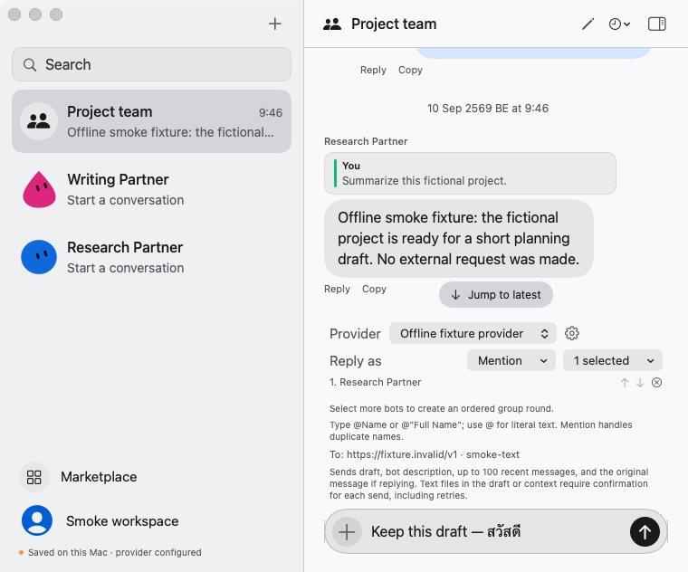
S28 · appearance-minimum
appearance-minimum--small-appearance-light-workspace.png760×600 content request; titlebar/raster pixels differ. Truncated sidebar text and offscreen transcript are viewport states; composer fits.
760 × 632 PNG pixels{kind=link}
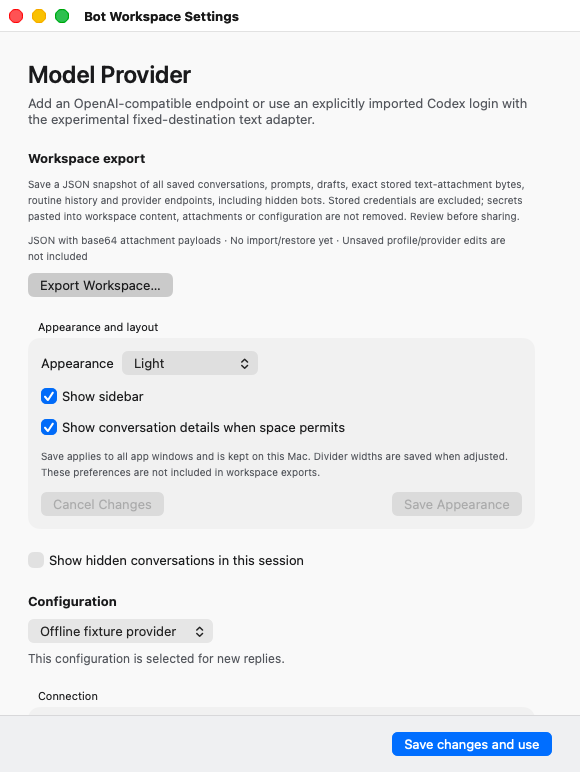
S29 · appearance-minimum
appearance-minimum--small-appearance-light-settings.png760×600 content request; titlebar/raster pixels differ. Truncated sidebar text and offscreen transcript are viewport states; composer fits. Identical PNG content to S22 (different alias/theme record).
580 × 772 PNG pixels
S30 · appearance-minimum
appearance-minimum--small-appearance-dark-workspace.png760×600 content request; titlebar/raster pixels differ. Truncated sidebar text and offscreen transcript are viewport states; composer fits.
760 × 632 PNG pixels
S31 · appearance-minimum
appearance-minimum--small-appearance-dark-settings.png760×600 content request; titlebar/raster pixels differ. Truncated sidebar text and offscreen transcript are viewport states; composer fits. Identical PNG content to S24 (different alias/theme record).
580 × 772 PNG pixels{kind=link}
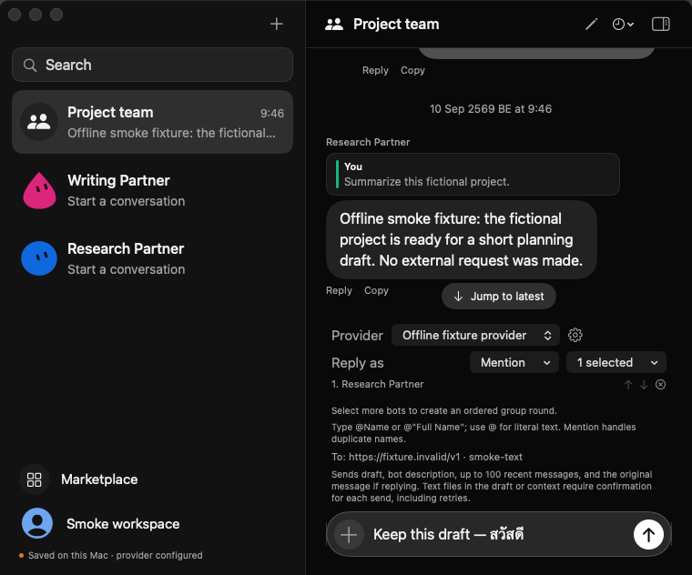
S32 · appearance-minimum
appearance-minimum--small-appearance-system-workspace.png760×600 content request; titlebar/raster pixels differ. Truncated sidebar text and offscreen transcript are viewport states; composer fits. Identical PNG content to S30 (different alias/theme record).
760 × 632 PNG pixels{kind=link}
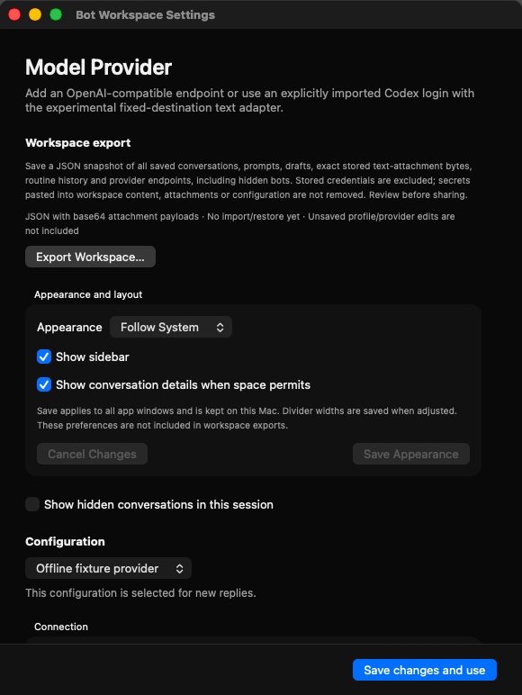
S33 · appearance-minimum
appearance-minimum--small-appearance-system-settings.png760×600 content request; titlebar/raster pixels differ. Truncated sidebar text and offscreen transcript are viewport states; composer fits. Identical PNG content to S26 (different alias/theme record).
580 × 772 PNG pixels{kind=link}
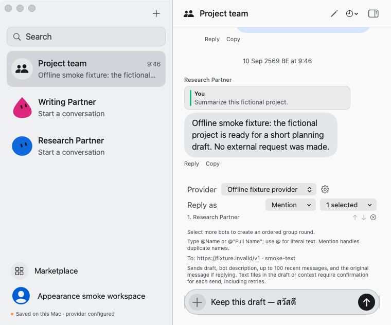
S34 · appearance-minimum
appearance-minimum--small-durable-workspace.pngFinal state of this named fixture scenario, NOT a first-launch baseline. 760×600 content request; titlebar/raster pixels differ. Truncated sidebar text and offscreen transcript are viewport states; composer fits.
760 × 632 PNG pixels{kind=link}
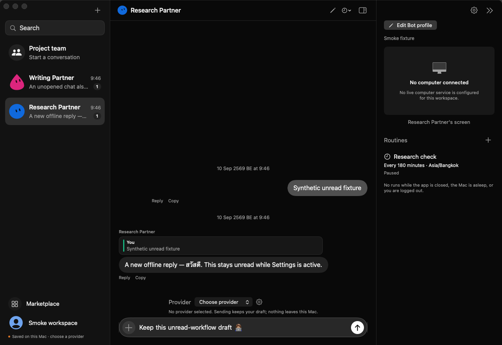
S35 · unread
unread--desktop-unread-dark-before.pngSynthetic foreground gate explicitly injected; not proof of real active/key-window reading acknowledgement.
1280 × 880 PNG pixels{kind=link}
S36 · unread
unread--desktop-unread-light-before.pngSynthetic foreground gate explicitly injected; not proof of real active/key-window reading acknowledgement.
1280 × 880 PNG pixels{kind=link}
S37 · unread
unread--desktop-unread-after.pngSynthetic foreground gate explicitly injected; not proof of real active/key-window reading acknowledgement.
1280 × 880 PNG pixels{kind=link}
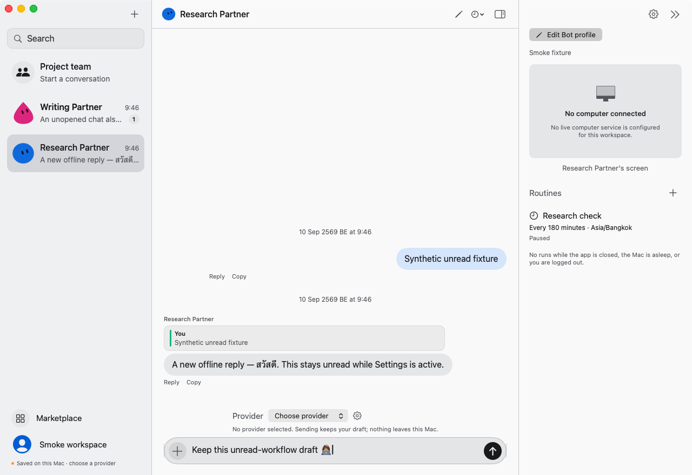
S38 · unread
unread--desktop-durable-workspace.pngFinal state of this named fixture scenario, NOT a first-launch baseline. Synthetic foreground gate explicitly injected; not proof of real active/key-window reading acknowledgement.
1280 × 880 PNG pixels{kind=link}
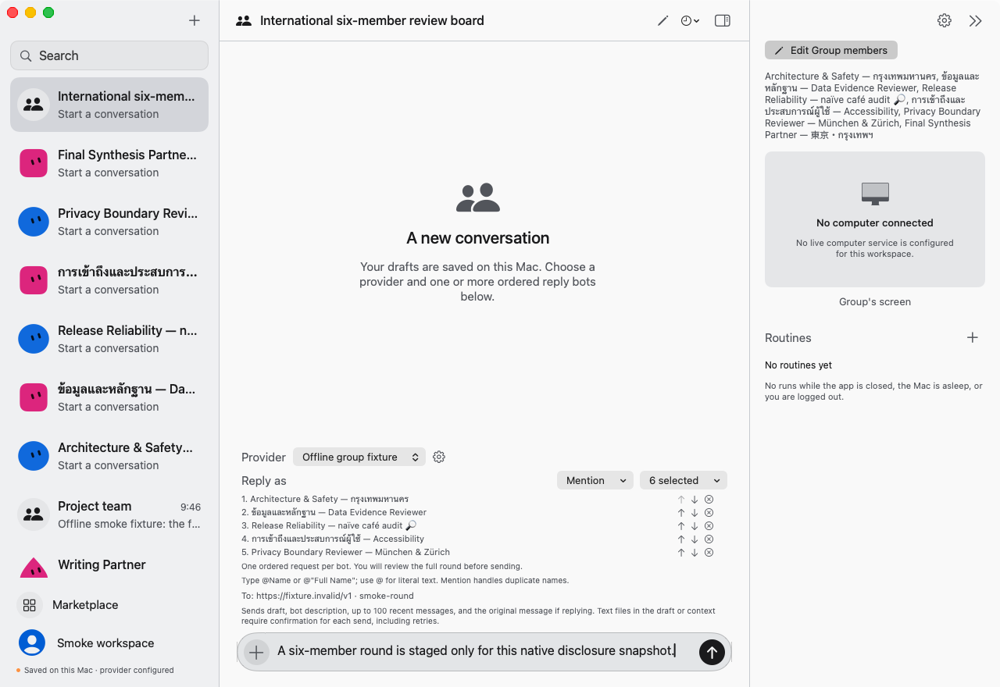
S39 · group-round
group-round--desktop-group-composer-light.pngSynthetic native fixture render; no physical interaction or live provider claim.
1280 × 880 PNG pixels{kind=link}
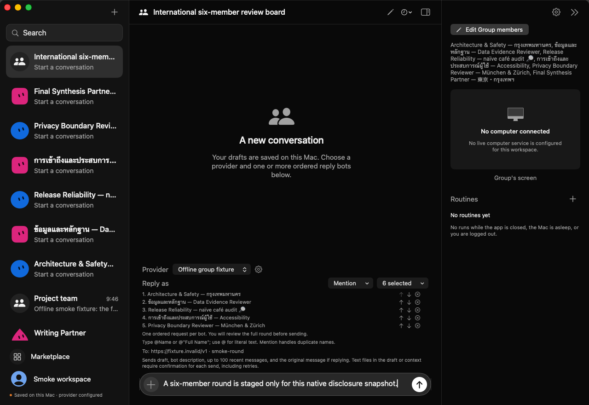
S40 · group-round
group-round--desktop-group-composer-dark.pngSynthetic native fixture render; no physical interaction or live provider claim.
1280 × 880 PNG pixels{kind=link}
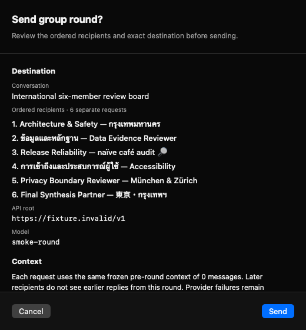
S41 · group-round
group-round--desktop-group-round-confirmation.pngSynthetic native fixture render; no physical interaction or live provider claim.
520 × 560 PNG pixels{kind=link}
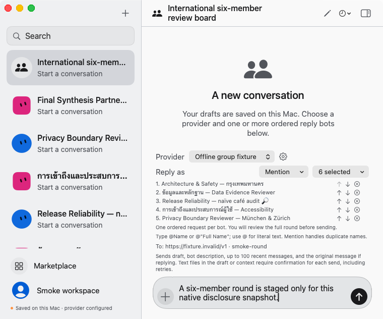
S42 · group-round-minimum
group-round-minimum--small-group-composer-light.pngMinimum-size window; recipient area is constrained/scrollable. This is rendered disclosure, not physical Send/Stop input.
760 × 632 PNG pixels{kind=link}
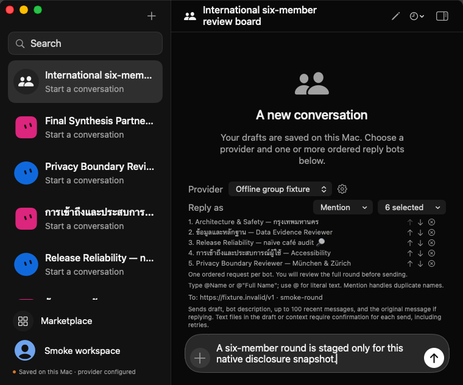
S43 · group-round-minimum
group-round-minimum--small-group-composer-dark.pngMinimum-size window; recipient area is constrained/scrollable. This is rendered disclosure, not physical Send/Stop input.
760 × 632 PNG pixels
S44 · group-round-minimum
group-round-minimum--small-group-round-confirmation.pngMinimum-size window; recipient area is constrained/scrollable. This is rendered disclosure, not physical Send/Stop input. Identical PNG content to S41 (different alias/theme record).
520 × 560 PNG pixels{kind=link}
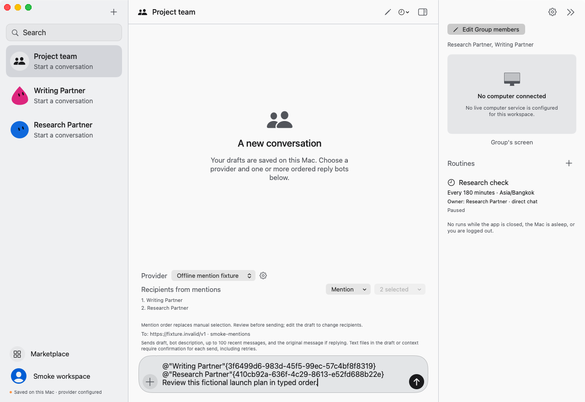
S45 · mention
mention--desktop-mention-composer-light.pngGeneric durable-workspace alias is the same invalid-Dark state, not a pristine workspace; use explicit mention filenames.
1280 × 880 PNG pixels{kind=link}
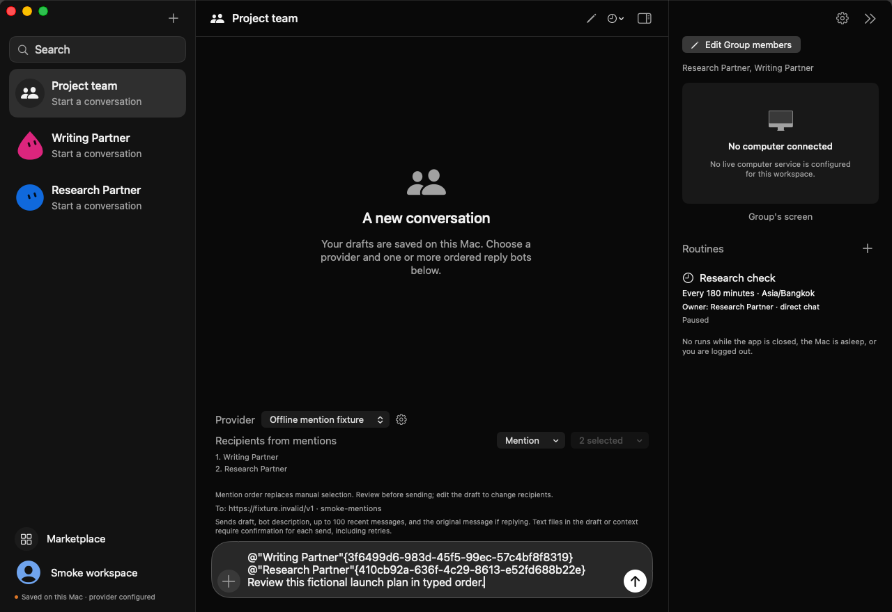
S46 · mention
mention--desktop-mention-composer-dark.pngGeneric durable-workspace alias is the same invalid-Dark state, not a pristine workspace; use explicit mention filenames.
1280 × 880 PNG pixels{kind=link}
S47 · mention
mention--desktop-mention-confirmation-light.pngGeneric durable-workspace alias is the same invalid-Dark state, not a pristine workspace; use explicit mention filenames.
520 × 560 PNG pixels{kind=link}
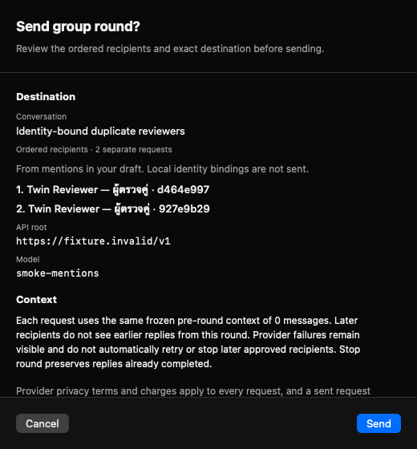
S48 · mention
mention--desktop-mention-confirmation-dark.pngGeneric durable-workspace alias is the same invalid-Dark state, not a pristine workspace; use explicit mention filenames.
520 × 560 PNG pixels{kind=link}
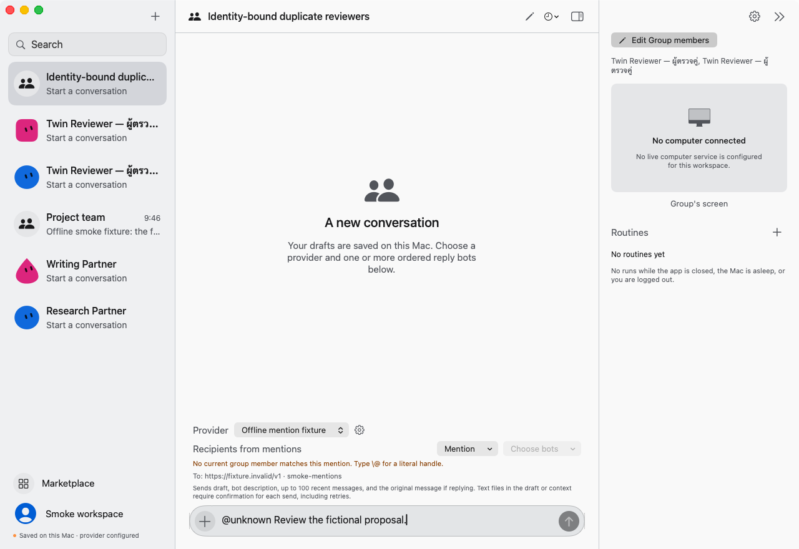
S49 · mention
mention--desktop-mention-invalid-light.pngGeneric durable-workspace alias is the same invalid-Dark state, not a pristine workspace; use explicit mention filenames.
1280 × 880 PNG pixels{kind=link}
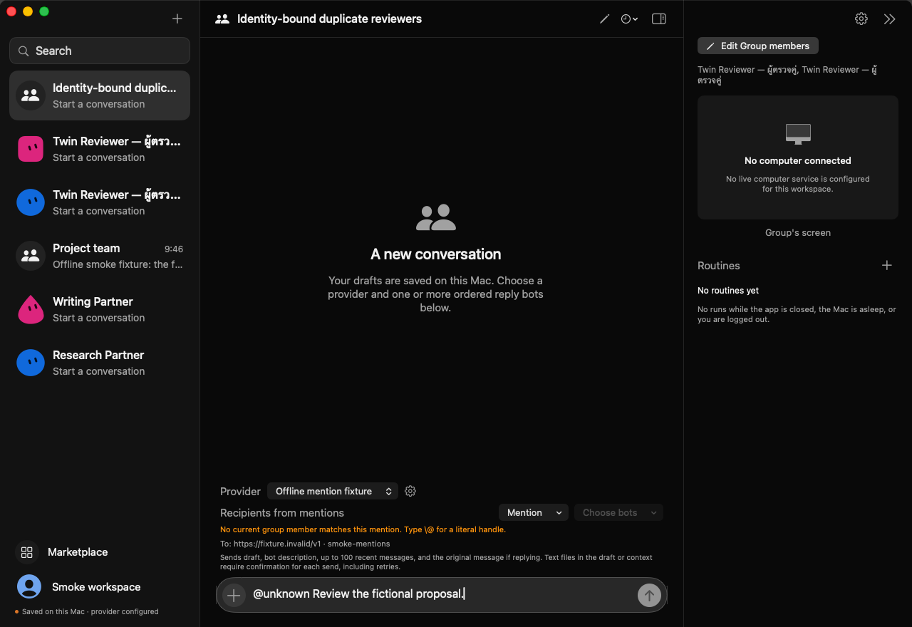
S50 · mention
mention--desktop-mention-invalid-dark.pngGeneric durable-workspace alias is the same invalid-Dark state, not a pristine workspace; use explicit mention filenames.
1280 × 880 PNG pixels
S51 · mention
mention--desktop-durable-workspace.pngAlias of invalid-Dark mention state, NOT a normal baseline workspace. Generic durable-workspace alias is the same invalid-Dark state, not a pristine workspace; use explicit mention filenames. Identical PNG content to S50 (different alias/theme record).
1280 × 880 PNG pixels{kind=link}
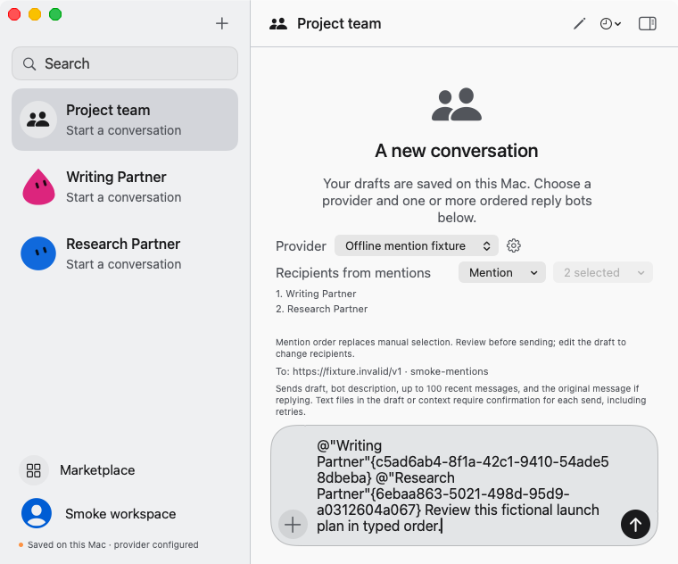
S52 · mention-minimum
mention-minimum--small-mention-composer-light.pngMinimum-size fixture. Explicit mention states are valid coverage; generic durable-workspace alias is the same invalid-Dark state.
760 × 632 PNG pixels{kind=link}
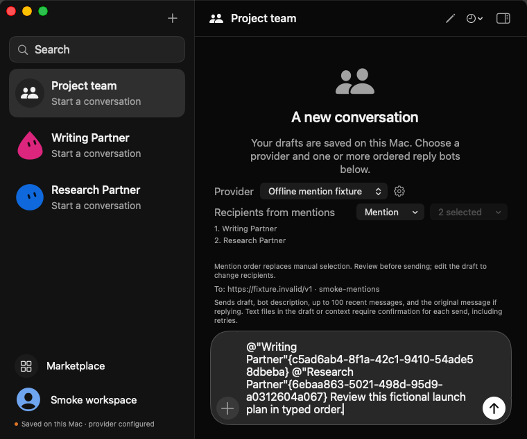
S53 · mention-minimum
mention-minimum--small-mention-composer-dark.pngMinimum-size fixture. Explicit mention states are valid coverage; generic durable-workspace alias is the same invalid-Dark state.
760 × 632 PNG pixels{kind=link}
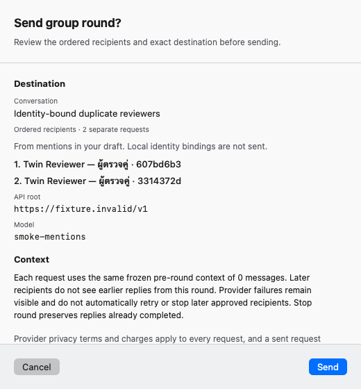
S54 · mention-minimum
mention-minimum--small-mention-confirmation-light.pngMinimum-size fixture. Explicit mention states are valid coverage; generic durable-workspace alias is the same invalid-Dark state.
520 × 560 PNG pixels{kind=link}
S55 · mention-minimum
mention-minimum--small-mention-confirmation-dark.pngMinimum-size fixture. Explicit mention states are valid coverage; generic durable-workspace alias is the same invalid-Dark state.
520 × 560 PNG pixels{kind=link}
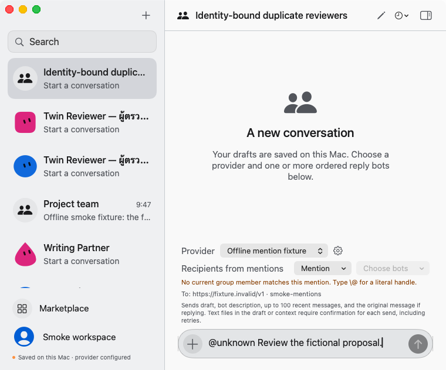
S56 · mention-minimum
mention-minimum--small-mention-invalid-light.pngMinimum-size fixture. Explicit mention states are valid coverage; generic durable-workspace alias is the same invalid-Dark state.
760 × 632 PNG pixels{kind=link}
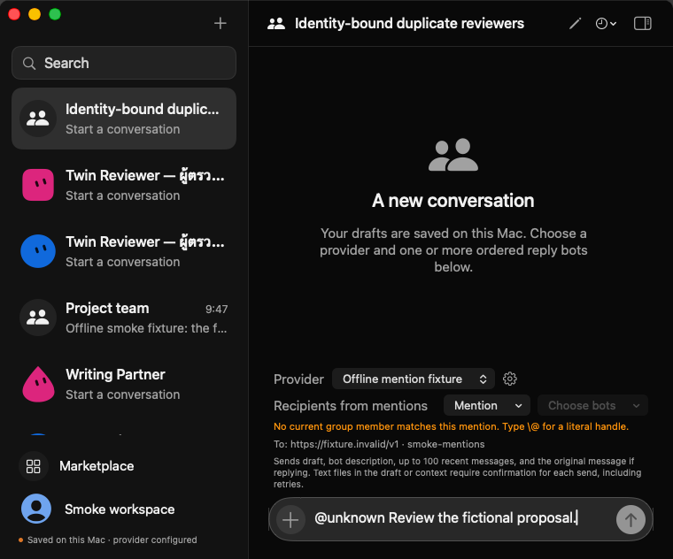
S57 · mention-minimum
mention-minimum--small-mention-invalid-dark.pngMinimum-size fixture. Explicit mention states are valid coverage; generic durable-workspace alias is the same invalid-Dark state.
760 × 632 PNG pixels
S58 · mention-minimum
mention-minimum--small-durable-workspace.pngAlias of invalid-Dark mention state, NOT a normal baseline workspace. Minimum-size fixture. Explicit mention states are valid coverage; generic durable-workspace alias is the same invalid-Dark state. Identical PNG content to S57 (different alias/theme record).
760 × 632 PNG pixels